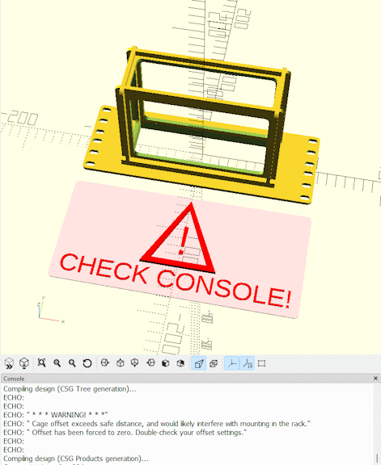
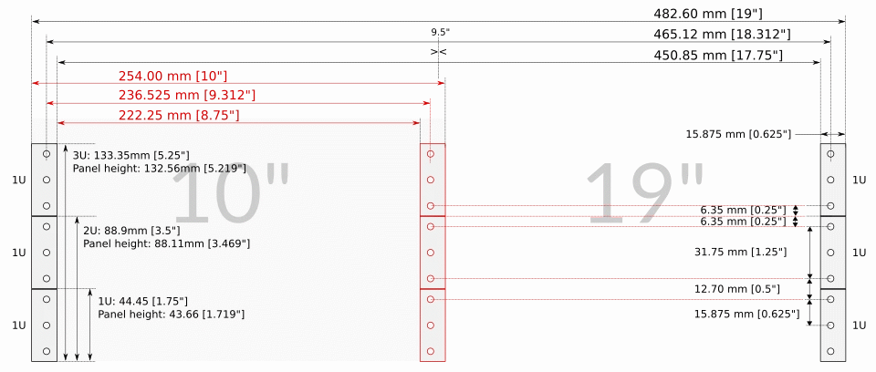
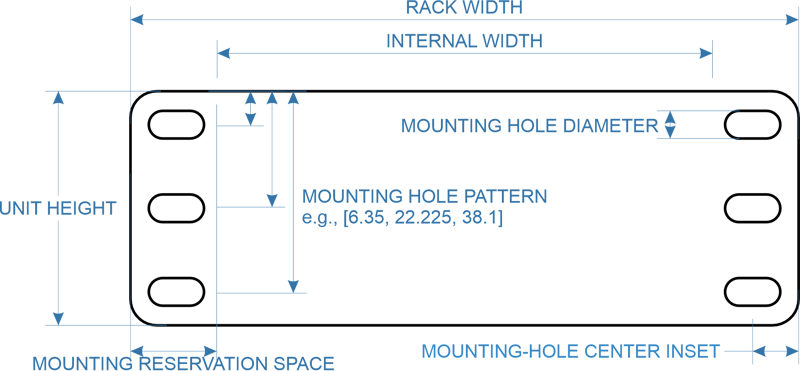

Configuration Options
CageMaker PRCG has a veritable boatload of options for generating useful rack cages. This page and its subpages explains each of them in detail, and where possible/useful, includes pictures to show the results of enabling or tweaking them.
CageMaker PRCG includes a number of safeguards to make it harder to accidentally create a cage that cannot fit into a rack that reasonably follows the EIA-310 standard for 19" racks, which are also very popular dimensional requirements for 6" and 7" micro-racks as well as 10" mini-racks. If setting an option would result in a cage that "breaks" fitment rules, the script will display a warning in the render preview and send text detailing the issue into the console.

Starting with version 0.40, CageMaker PRCG can optionally generate cages that do not follow EIA-310 by choosing the rack systems' geometry (namely, its "unit" height and mounting hole spacing) in the rack geometry option. In such cases, CageMaker PRCG will still enforce certain fitment rules:
- Space is reserved on either side for mounting, usually 5/8" or 15.875mm for EIA-compliant cages.
- "Unit" size is changed to suit the non-standard setting, and will still automatically scale to suit the device dimensions.
- Cage positioning is still limited to fit within the selected width of the rack.
- Faceplate modifications are still discouraged from overlapping the cage proper or the mounting space mentioned above.
The typical dimensional, fitment, and sizing rules for the rack broadly this script follows are summed up here:

And for the rack geometry, the following dimensions can be altered or edited:

Dimensions for 5"/6"/7" racks follow those for 10" unless a noncompliant rack geometry is selected, with an obvious reduction of overall outer width.
The order that some options appear in the Customizer (and by extension, in OpenSCAD Playground) have been changed in version 0.70.
Important Notes On Viewing Angles
By default, CageMaker PRCG designs cages to be printed faceplate-down, and this orientation means that the default viewing angle in OpenSCAD (and by extension, OpenSCAD Playground) will be as though looking at the cage from behind and above its "top" side. Starting with version 0.40, when the show ruler option is enabled, a marker to indicate which edge is "top" will be shown to make it easier to determine "up" and "down" as cages are both vertically and horizontally symmetrical by default and only become asymmetrical by enabling or modifying some options.
Individual Options
CageMaker PRCG has a lot of options, so these have been split off onto pages by option category as they are laid out in OpenSCAD's Customizer.
These categories are:
Target Device Presets
Making cage generation as simple as picking a device from a list.
Target Device Dimensions & Count
Determining how big a cage needs to be, and how many of the same device are being caged.
Overall Structure & Geometry
Setting the construction details for the cage.
Rulers/Guides
Making cage design easier.
3D Printer Support
Making printing cages easier as well.
Rack Settings
Telling CageMaker PRCG about the rack for which it will design rackmount components.
Faceplate Options
Everything in a rack hangs off a faceplate, and these options configure them. Also contains controls for cageless custom faceplates.
Faceplate Ventilation Options
Letting air in and heat out.
Cage Options
The actual structure that holds a device.
Cage TOP and BOTTOM Geometry & Ventilation Options
Configuring the cage's top and bottom sides.
Cage LEFT and RIGHT SIDES Geometry & Ventilation Options
Configuring the cage's left and right sides.
Cage BACK Geometry & Modifications
Configuring and modifying the cage's backplate
Rear Support Options
Creating a secondary cage to help support heavier devices on cages that have both front and rear rails.
Additional Faceplate Modifications
Adding sockets, cutouts, connectors, indicators, fan grills, and more.
Custom Cutout Options
When there's not a preset modification, create one.
Ignore Errors
Forcing CageMaker PRCG to generate a cage it doesn't like.
Rarely-Changed Options
Options for tweaking settings that don't normally require tweaking.